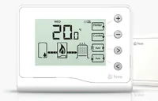
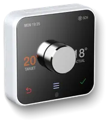
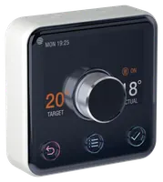

 |
View Hive Hive Active Heating 1 (SLT2) user manualHive Hive Active Heating 1 (SLT2) user manual PDF |
View Hive Hive Active Heating 1 (SLT2) installation manualHive Hive Active Heating 1 (SLT2) installation manual PDF |
Hive Hive Active Heating 1 (SLT2) |
Legacy Hive 1 wireless thermostat |
|
|
 |
View Hive Hive Active Heating 2 (SLT3) user manualHive Hive Active Heating 2 (SLT3) user manual PDF |
View Hive Hive Active Heating 2 (SLT3) installation manualHive Hive Active Heating 2 (SLT3) installation manual PDF |
Hive Hive Active Heating 2 (SLT3) |
Dial thermostat, hub + receiver |
|
|
 |
View Hive Hive Active Heating 2 Wired (SLT5) user manualHive Hive Active Heating 2 Wired (SLT5) user manual PDF |
View Hive Hive Active Heating 2 Wired (SLT5) installation manualHive Hive Active Heating 2 Wired (SLT5) installation manual PDF |
Hive Hive Active Heating 2 Wired (SLT5) |
Mains-powered wired thermostat |
|
|
|
View Hive Hive Thermostat Mini (SLT6) user manualHive Hive Thermostat Mini (SLT6) user manual PDF |
View Hive Hive Thermostat Mini (SLT6) installation manualHive Hive Thermostat Mini (SLT6) installation manual PDF |
Hive Hive Thermostat Mini (SLT6) |
Compact wireless thermostat |
|
|
|
View Hive Hive Radiator Valve user manualHive Hive Radiator Valve user manual PDF |
View Hive Hive Radiator Valve installation manualHive Hive Radiator Valve installation manual PDF |
Hive Hive Radiator Valve |
Smart TRV head |
|
|